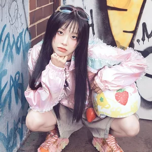

Reproduzir artistas parecidos
Ouvintes: 99,6 mil
Scrobbles: 2,5 mi
Seus scrobbles: 94
Ha Soo Young (hangul: 하수영, Busan, 24 de maio de 1997), Coreia do Sul, mais conhecida como Yves (hangul: 이브), é uma cantora, rapper, dançarina e apresentadora sul-coreana. Yves estreou como nona integrante do grupo feminino LOOΠΔ, é foi a líder da subunidade LOOΠΔ / yyxy. Ha Soo Young nasceu e… Leia mais
Artistas Semelhantes
Loosemble
CHUU
ARTMS